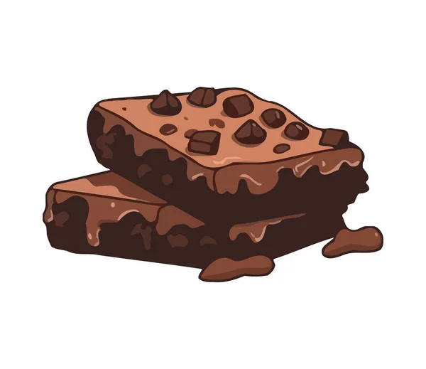

Chewy Brownies
| Quantity: | Ingredients: |
|---|---|


|
Unsalted Butter(71g) Granulated Sugar(249g) Use 2 egg(s) + 2 egg yolk Vanilla Extract(1 teaspoons) Vegetable Oil(64g) Cocoa Powder(75g) All-Purpose Flour(63g) Cornstarch(1 tablespoons) Salt(1/4 tablespoons) Semisweet Chocolate Chips(128g) |
|
For pcs small brownies
|
INSTRUCTIONS:
Preheat the oven to 325°F. Line an 8 by 8-inch light-colored metal pan with foil or parchment paper and spray with nonstick cooking spray.
In a microwave-safe bowl, add the butter and sugar. Microwave for about 1 minute, or until the butter is melted. Whisk in the eggs, egg yolk, and vanilla. Stir in the oil and cocoa powder.
With a rubber spatula, stir in the flour, cornstarch, and salt until combined. Stir in the chocolate chips.
Spread the brownie batter evenly into the prepared pan. Place in the oven and bake for 30 minutes, or until the brownies are set and a cake tester inserted into the center has moist crumbs attached. Do not overcook. Let cool completely to solidify before cutting and serving.
Brownies can be stored in an airtight container at room temperature for up to 3 days. Brownies will be gooey when served warm, chewy when served at room temperature, and fudgy when served chilled.